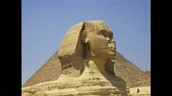

Les pyramide
Les pyramides d'Égypte, de tous les vestiges monumentaux que nous ont légués les Égyptiens de l'Antiquité, et notamment les trois grandes pyramides de Gizeh, sont à la fois les plus impressionnantes et les plus emblématiques de cette civilisation. Si elle fut, à son origine, destinée au roi, l'idée d'une sépulture pyramidale fut rapidement reprise par les proches du souverain. Khéops semble avoir été le premier à autoriser ses femmes à se faire élever un tel tombeau. Tombeaux des rois, des reines et des grands personnages de l'État, dont l'édification remonte pour la grande majorité à l'Ancien Empire, la forme pyramidale de pierre accueille une ou plusieurs chambres internes reliées par des couloirs. La grande pyramide de Gizeh, construite par Khéops, fait partie des Sept Merveilles du monde antique et est classée au patrimoine mondial de l'humanité.
Valee du nil
Le majestueux Nil alimente l'Égypte en eau depuis des millénaires. Digne de sa réputation de plus grand musée à ciel ouvert du monde, la Vallée du Nil abrite des milliers de monuments, comme Louxor et Assouan. Ne ratez pas Karnak et ses temples, les douzaines de tombes de la Vallée des Rois, les énormes temples de pierre d'Abu Simbel ou le magnifique temple de Louxor. Les visiteurs peuvent monter à bord d'une felouque ou d'un navire de croisière pour admirer ses sites époustouflants depuis le Nil ou prendre un train au départ du Caire.
Lieux a ne pas rater
 Le barrage hydraulique d’Assouan sur le Nil a été achevé en 1970. Haut de 111 mètres, il est l'un des plus importants du monde. Sa construction a été initiée par le président égyptien Gamal Abdel Nasser.
C'est le pharaon Ramsès II qui a décidé de l'édification des deux temples d'Abou Simbel. Le plus grand est à la gloire des divinités égyptiennes et du monarque. Le second célèbre Néfertari, la femme de Ramsès II.
Louxor était connu sous le nom de Thèbes durant l'Antiquité. La cité accueille la vallée des rois, qui abrite les sépultures de plusieurs pharaons ainsi que celles de leurs épouses et de leurs enfants. Ramsès Ier a fait construire, à proximité, la vallée des reines.
Le site archéologique de Karnak rassemble plusieurs temples. Le lieu est classé patrimoine mondial historique depuis 1979. Le temple le plus imposant est celui dédié au dieu Amon.
Le site de Gizeh rassemble les trois grandes pyramides et le Sphinx. La pyramide de Khéops, la plus grande, est la seule des sept merveilles du monde encore visible. Les trois pyramides sont les tombeaux des trois pharaons Khéops, Képhren et Mykérinos.
Philae était une ville de l'antiquité égyptienne qui a été noyée par la construction du barrage d'Assouan. Les temples ont été déplacés puis reconstruits entre 1974 et 1976 sur l'île d'Aguilkia.
Le barrage hydraulique d’Assouan sur le Nil a été achevé en 1970. Haut de 111 mètres, il est l'un des plus importants du monde. Sa construction a été initiée par le président égyptien Gamal Abdel Nasser.
C'est le pharaon Ramsès II qui a décidé de l'édification des deux temples d'Abou Simbel. Le plus grand est à la gloire des divinités égyptiennes et du monarque. Le second célèbre Néfertari, la femme de Ramsès II.
Louxor était connu sous le nom de Thèbes durant l'Antiquité. La cité accueille la vallée des rois, qui abrite les sépultures de plusieurs pharaons ainsi que celles de leurs épouses et de leurs enfants. Ramsès Ier a fait construire, à proximité, la vallée des reines.
Le site archéologique de Karnak rassemble plusieurs temples. Le lieu est classé patrimoine mondial historique depuis 1979. Le temple le plus imposant est celui dédié au dieu Amon.
Le site de Gizeh rassemble les trois grandes pyramides et le Sphinx. La pyramide de Khéops, la plus grande, est la seule des sept merveilles du monde encore visible. Les trois pyramides sont les tombeaux des trois pharaons Khéops, Képhren et Mykérinos.
Philae était une ville de l'antiquité égyptienne qui a été noyée par la construction du barrage d'Assouan. Les temples ont été déplacés puis reconstruits entre 1974 et 1976 sur l'île d'Aguilkia.
sommaire
- Quelles sont les 7 merveilles du monde antique
- zone touristique
Quelles sont les 7 merveilles du monde antique
 Réparties à travers le monde Hellénique, en Afrique du Nord et en Asie mineure, ce sont les grands voyageurs, artistes et érudits émerveillés par ces prodigieuses réalisations qui propagèrent leur légende. On doit à Philon de Byzance une première liste des sept Merveilles. Mais cette liste primitive évoluera au fil du temps, alimentée par différents auteurs. Finalement, la liste canonique compte les 7 Merveilles du monde antique suivantes . Ces œuvres, construites entre environ 2650 av. J.-C. pour la pyramide de Khéops et le début du IIIe siècle av. J.-C. pour le phare d'Alexandrie, se situent toutes autour du bassin méditerranéen.
Réparties à travers le monde Hellénique, en Afrique du Nord et en Asie mineure, ce sont les grands voyageurs, artistes et érudits émerveillés par ces prodigieuses réalisations qui propagèrent leur légende. On doit à Philon de Byzance une première liste des sept Merveilles. Mais cette liste primitive évoluera au fil du temps, alimentée par différents auteurs. Finalement, la liste canonique compte les 7 Merveilles du monde antique suivantes . Ces œuvres, construites entre environ 2650 av. J.-C. pour la pyramide de Khéops et le début du IIIe siècle av. J.-C. pour le phare d'Alexandrie, se situent toutes autour du bassin méditerranéen.
zone touristique
Les pyramides de Gizeh sont les plus connues parce qu'elles sont les plus grandes, les plus achevées et les mieux conservées de nos jours, mais d'autres pyramides ont été construites avant et après elles. On peut constater l'évolution technique de la construction des pyramides au cours des siècles : Avant les pyramides, les sépultures des pharaons et des hauts personnages étaient des mastabas, grands tombeaux carrés recouvrant des puits et des chambres sépulcrales ; Les premières pyramides, celles de la IIIe dynastie, sont des pyramides à degrés, faites de plusieurs mastabas empilés, formant de gigantesques escaliers dressés vers le ciel ; Puis les rois de la IVe dynastie se font bâtir des pyramides à faces lisses, qui deviennent des objets de forme parfaitement géométrique, désormais et pour longtemps les constructions les plus hautes et les plus massives bâties par l'homme. Les pyramides d’Égypte sont situées sur le long plateau calcaire désertique qui s'étire au-dessus de la rive gauche du Nil.